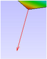
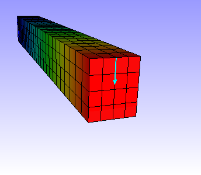

Symbol Plot
VCollab Pro users can add and display symbols at selected locations on the CAE model for Vector results , Tensor results, SPC and Pressure using the Symbol Plot option. The symbols can be displayed either in 2D or 3D as shown below
Symbol Plot Types
| Result Type | Condition | 3D | 2D |
| Vector | Appears if CAE model contains at least one vector result. |  | |
| Tensor | Appears if CAE model contains at least one tensor result. | Tensile
Compression
|
|
| SPC | Single Point Constraint plot appears if CAE model contains any SPC data. |  |
 |
| Pressure | Appears if CAE model contains "Pressure Loads" result |  |


SPC (Single Point Constraint)
This function creates multiple symbol plots based on the constraint type. It groups nodes or elements based on constraint type the node or element has. Then it creates a symbol plot with the name "Constraint Type_T[xyz]_R[xyz]".
There are 63 combinations of Translational and Rotational constraints.
For example,
T[x]_R[z] - "Translation is fixed only in X direction and Rotation is fixed only in Z direction".
T[xyz] - "No Translation in all 3 degrees of freedom".
R[xyz] - "No Rotation in all 3 degrees of freedom".
T[xyz]_R[xyz] - "Completely constrained in all 6 degrees of freedom".

Symbol Plot Options
After creating the Symbol plot, click on Options to open the Symbol Plot Options panel as shown below.
The various fields appearing in the Symbol Plot Options panel are explained below.
| Symbol Type | Lists all available symbols. |
| Scale Factor | Allows user to control the size of the symbol |
| Length | Allows users to control the length or height of the symbol. |
| Width | Allows users to control the width of the symbol. |
| View Mode | Provides options to display the symbols. Auto, From Position, To Position and Resultant. These functions are applicable only for Vector type symbols. |
| Color | Allows users to change the color of all symbols. |
| Apply | Applies the modifications done to the symbols. |
Note
All the options will effect only for the current symbol plot selected.
Steps to create a Symbol Plot
Click CAE | Symbol Plot.. to open the dialog as shown below
- Select a CAE model name from the drop down list.
- Select a Plot Type from the drop down list, which lists valid plot types based on the CAE model results.
- Symbol Direction Definition: CAE Result data is required for symbol direction. Result Information will be updated based on the plot type selected.
- Select a Result
- Select an Instance.
- Select a derived vector for tensor type.
- Select complex components if necessary.
- Symbol Position Definition: Users can skip this if the plot type is of SPC or Pressure, in which case they can click the Create button directly without defining symbol positions. In other cases, symbol positions are defined by Nodes. There are various options to select nodes,
- Enable Pick option and click on the model to select nodes.
Nodes text box will be appended with nodes after each selection.

Enable Rect option to select nodes by region or window in the viewer.

- Click Hotspots option to use current hotspot labels for symbol position.
- Click All IDs option to use all Valid IDs for the selected results.
- Node selection is not necessary for SPC and Pressure plots.
- Symbol Plot Name: Default name is provided by application based on the number of plots exists. Change the plot name if necessary.
- Symbol Plot Creation: Click the Create button to create symbol plot. Created symbol plot name is appended to the list box below the Create button.
- Symbol Plot List and Visibility: All created symbol plots are listed in the box with a check box to enable/disable plot visibility. Users can hide some symbol plots to avoid messy visualization. Uncheck the plot names in the list box to hide it.
- Symbol Plot Deletion: Select a plot in the list. Click the Delete button. The plot selected will be deleted from the viewer as well as from the list box.
Using Symbol Plot options option user can,
- toggle between Symbol display type between 2D and 3D.
- scale the symbol length and width.
- enter a specific scale factor in the given text boxes.
- change the color of symbols
Note
All the options are applicable only for the current symbol plot selected.
Steps to scale, change color and dimension of the symbols
Define plot type, results and positions.
Click Create, which applies and displays the symbols.
Click the Options button, which opens up symbol plot options dialog. This UI allows user to control length/height, width and color of symbols.
The following image displays the symbols after modifying the symbol size and color.

Users can change the symbols into 2D. Select symbol type as 2D Symbol.

Users can select different view modes, only for Vector Type symbols in options dialog.
View mode: Auto is default one, which makes all symbols visible on the outer surface of the model.
View mode : From Position makes all symbols start from vertices.
View mode : To Position makes all vector symbols end at vertices.

View mode : Resultant computes a single symbol by averaging all symbols and displays the resultant.

Users can create multiple plots in a single CAE model and classify them with color and size.